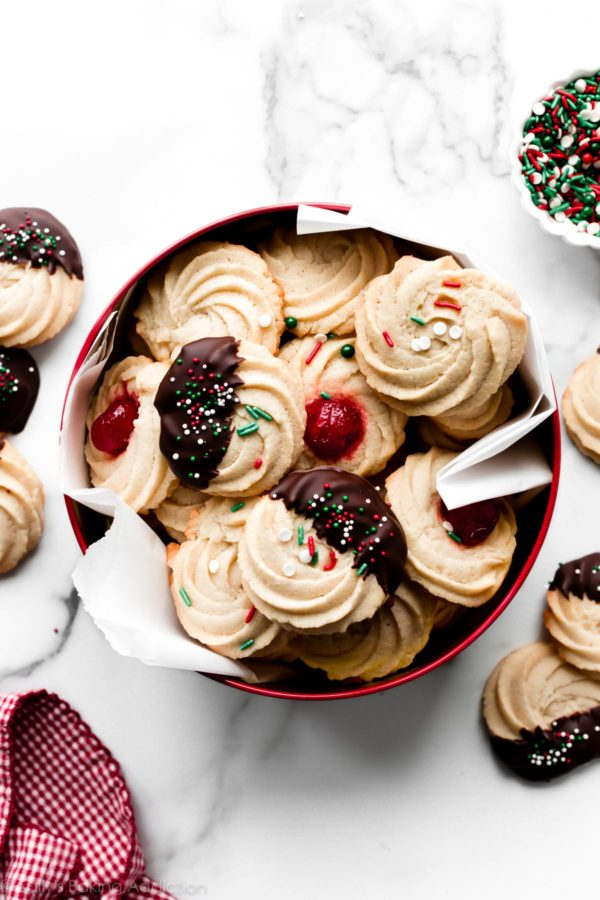

Homemade buter-cookies are soft delicious and easy to make here's how. Below is a one bowl cookie recipe.

Description
Using just 8 basic ingredients and a large piping tip, make these soft vanilla almond flavored butter cookies. There's no leavening, so the texture is close to shortbread cookies. I recommend chilling the piped cookies for at least 20-30 minutes before baking.
Ingredients
- 1 cup (2 sticks; 230g) unsalted butter, softened to room temperature
- 3/4 cup (150g) granulated sugar
- 1 and 1/2 teaspoons pure vanilla extract
- 1 teaspoon almond extract
- 1 large egg, at room temperature
- 2 and 1/4 cups (281g) all-purpose flour (spoon & leveled).
- 1/2 teaspoon salt
- 1 – 2 Tablespoons (15-30ml) milk
Note:- Please beware of mixing excess sugar,makes it unbearable,preparing butter-cookies takes about 30 to 40 mins. This butter-cookie recipe is adapted from spritzcookies and sugar cookies both well-loved websites.
Optional Toppings
- one 4-ounce quality semi-sweet chocolate bar (113g), finely chopped
- sprinkles or coarse sugar
Instructions
The following are well elaborated steps on how to make a sumptous bowl of butter cookies:-
- Make room in your refrigerator for a baking sheet so the shaped cookies can chill for 20-30 minutes. Without chilling, the piped cookies may over-spread. If you chill the dough prior to shaping, the dough will be too cold/stiff to pipe.
- Line 2-3 large baking sheets with parchment paper or silicone baking mats. Or leave un-lined. If un-lined, do not grease the pan
- In a large bowl, using a handheld mixer or a stand mixer fitted with a paddle attachment, beat the butter and granulated sugar together on medium-high speed until smooth, about 2 minutes. Add the egg, vanilla extract, and almond extract, and beat on high speed until combined, about 1 minute. Scrape down the sides and up the bottom of the bowl and beat again as needed to combine.
- On low speed, beat in the flour and salt. Turn up to high speed and beat until completely combined. On medium speed, beat in 1.5 Tablespoons of milk. You want a dough that’s creamy and pipe-able (but still thick), so you may need up to 2 or 2.5 Tablespoons of milk. The more milk you add, the more the cookies will spread so chilling in step 6 is imperative. I recommend keeping the amount of milk small and using a large enough piping tip, like the ones I suggest in the post above.
- Add your large piping tip to the piping bag. Spoon a little bit of dough into the piping bag and pipe a 1-2 inch swirl or line on the prepared baking sheet. The reason I suggest only a little bit of dough to start is because the dough may still be too thick to pipe. If it’s too thick, transfer that dough back to the mixing bowl and add another 1/2 Tablespoon of milk. If the dough is creamy enough to pipe, continue piping the dough in 1-2 inch swirls or lines, 3 inches apart on the baking sheet. See video above for a visual if needed. If desired, place a maraschino cherry in the center of the swirl or sprinkle the dough with festive sprinkles and/or coarse sugar.
- Chill the shaped cookies on the baking sheet for 20-30 minutes.
- Meanwhile, preheat oven to 350°F (177°C).
- Bake the chilled cookies for 12-15 minutes or until lightly browned on the sides. The cookies will spread like all cookies do, but not completely lose their shape especially if you chilled the shaped dough. If the cookies are smaller, they will take closer to 12 minutes. Keep your eye on them. They’re done when the edges lightly brown.
- Remove from the oven and allow to cool on the baking sheet for 5 minutes before transferring to a wire rack to cool completely.
- Optional Chocolate: You can melt the chocolate in a double boiler or the microwave. If using the microwave: place the chopped chocolate in a medium heat-proof bowl. Melt in 20 second increments in the microwave, stirring after each increment until completely melted and smooth. Dip the cookies in chocolate and top with sprinkles, if desired. Allow the chocolate to set completely at room temperature for about 1 hour or in the refrigerator for 20 minutes.
- Plain cookies stay fresh in an airtight container at room temperature for up to 1 week. Cookies with chocolate or cherries stay fresh in an airtight container at room temperature for 3 days or in the refrigerator for 1 week.
Notes
- You can chill the shaped cookies on the baking sheet in the refrigerator for up to 2 days before baking. If chilling for longer than 30 minutes, cover with plastic wrap or aluminum foil. Sometimes I pipe all the swirls close together on 1 baking sheet, then refrigerate for up to 2 days. (Since my refrigerator can’t fit 2-3 sheets at once.) After chilling, the shaped dough is cold, so you can use a flat spatula to pick up the cold shaped dough and arrange on 2-3 baking sheets. You can also freeze the un-baked shaped dough for up to 2-3 months. Bake the frozen shaped dough (no need to thaw) for an extra couple minutes. Baked cookies, with or without chocolate/cherries/sprinkles, freeze well for up to 3 months.
- Almond extract adds such a wonderful flavor and I don’t recommend skipping it. If desired, you can leave it out completely or add another 1/2 teaspoon of pure vanilla extract in its place. You can also substitute with 3/4 teaspoon peppermint extract, 1 teaspoon lemon extract, or another flavor extract you enjoy. (Some are more potent than others.) Adding 1/4 teaspoon of ground cinnamon is delicious too!
- This recipe is similar to my spritz cookies where they used a cookie press. If you don’t have a large piping tip, you can make the spritz cookies (they do not need the milk). If you don’t have a cookie press or large piping tip, snip a 1/2 inch corner off the end of a plastic bag and pipe lines/flat swirls.
- For the best results, use a 4 ounce “baking chocolate” bar found in the baking aisle. I prefer Bakers or Ghirardelli brands. You can use semi-sweet, milk chocolate, or even white chocolate. Candy melts or almond bark work too. Do not use chocolate chips, as they contain stabilizers preventing them from melting into the proper consistency. After you melt it, if the chocolate is too thick for dipping, stir in 1 teaspoon of canola oil to help thin it out.